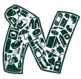
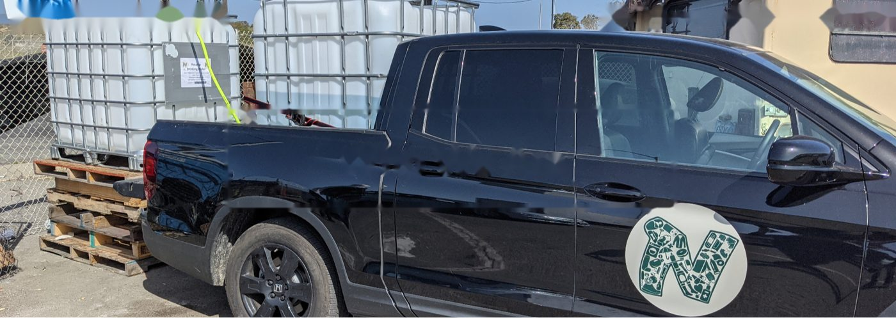
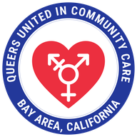

Applied AI engineer and founder, moving into empirical AI safety research
Technical Career
Independent AI safety research
Nov 2026 – present
Observer-effect eval: a behavioral eval testing whether a frontier model behaves differently when it's told no one can read its transcripts. The conditions differ by a single line in the system prompt, compared against a neutral control, and a grader model labels each response. I wrote down the hypothesis and what would count as support before running anything.
Working through the ARENA curriculum: transformer interpretability, RL, LLM evals, and alignment science.
Foxglove
2026
Customer Success Engineer, Robotics
Served as primary technical partner for 20 strategic robotics accounts, and worked with go-to-market teams on 4+ renewals, 3 of which expanded.
Scale AI
Jun 2025 – Jan 2026
Robotics Solutions Engineer
Worked directly with researchers at leading robotics labs to define the training data needed for vision-language (VLM) and vision-language-action (VLA) models: data coverage, labeling specs, and sensor configurations.
Built Python validation and evaluation tooling, plus multimodal pipelines that turn raw sensor data into training-ready datasets.
Led cross-account reviews of failure modes from Scale's first robotics customers, and turned the shared patterns into team best practices.
Waymo
Jun 2021 – Dec 2023
Senior Technical Program Manager, Behavior Prediction / Data & Infrastructure
Led the launch of Waymo's first rider-only prediction models, which contributed to the company's first 1M rider-only miles.
Ran program management for the 55-person Behavior Prediction ML org, with evaluation gating every model release.
Drove ML compute, data, and infrastructure strategy for the 250+ person Behavior org. I led a team that cut compute costs by 7% and built the cost dashboards that guided 2024 decisions.
Found data gaps that were hurting model performance and defined data requirements for freeway and adverse-weather driving, which helped the fleet hold 99.4% uptime through winter 2022–23.
Microsoft
Nov 2019 – May 2021
Lead Applied AI Engineer, Autonomous Systems
Designed reinforcement learning models to replace classical PID and MPC controllers in customer simulators (Unreal Engine and proprietary ones), defining reward functions, state representations, and evaluation for each system.
Founded the Autonomous Systems Partner Enablement team and grew it from 2 to 10 engineers. I owned technical outcomes for 15+ Fortune 500 programs, about a third of product revenue.
Earlier: Technical Solutions Architect for Azure AI at Microsoft (2018–19) · Software Engineer at Microsoft (2017–18) · Software Engineer at Citrix (2015–17)
Founding Experience
Scream Kings React
Nov 2024 – present
Co-founder
A YouTube channel where we react to movies. It started from horror, though our biggest hits have come from other genres. It was monetized in March 2026 and has been profitable since.
sk_ranker: a Python CLI and Streamlit app that predicts which titles will do well as reaction videos. It pulls signals from TMDb, OMDb, Google Trends, YouTube, and Letterboxd, and logs every prediction to SQLite so we can compare predicted and actual performance.
Video Linter: a native macOS app in Swift that runs quality checks on a video before upload: bitrate, A/V sync, black frames, silence, and loudness measured to the ITU-R BS.1770-4 standard.
Reaction Kit: a Premiere Pro extension that automatically syncs a reaction recording to the source timeline using only signals from the reaction itself.

NeighborAid East Bay
Nov 2020 – Feb 2022
Co-founder · Oakland, CA

The Water for All program at work: delivering potable water for families living in RVs
A grassroots mutual aid group serving houseless and low-income residents in East Oakland and Richmond. We focused on immediate, practical needs and left long-term services to larger organizations.
Over $65K raised in a few months. I set up a fiscal sponsorship through a QUICC contact so donations were tax-deductible without the overhead of running a nonprofit, then launched a fundraising campaign and a coat drive.
Built the Free Store: a vehicle stocked with basic necessities. It gave people relief right away and gave us a way to hear what they actually needed.
Over $80K in COVID-era government funds secured for residents. We had learned people were missing out simply because they didn't know about the funds. We ran tax and information clinics in local parks, drew people in with the Free Store and a free BBQ, and trained a small team to help with the paperwork.
Solved mail access: I routed people through general delivery at the post office and picked up and delivered mail myself when needed.
Pivoted to grantmaking once it was clear we raised money better than most mutual aid groups. Our "Water for All" grants set up and maintained a clean water supply for dozens of families living in RVs, and we also funded RV roof repairs.

QUICC · Queers United in Community Care
Jun 2020 – Feb 2021
Founding member · SF Bay Area, CA
A queer-led volunteer first-aid and community care collective providing first aid, food, and supplies across the Bay Area. I co-founded it in 2020 with three others to provide high-quality public first aid.
Set up the mission, core values, best practices, and operating infrastructure for a collective that grew from 4 founders to over 40 members.
Secured funding and managed major assets, including vehicles, property, and a $100K budget.
Served as team lead in high-stress environments, coordinating first aid where traditional EMS wasn't available.
Over time, we redirected our first aid and supplies to unhoused residents in the areas where we worked. That gap is what led to NeighborAid.
Education
BA Psychology, University of California, Santa Barbara AS Computer Science, Santa Barbara City College